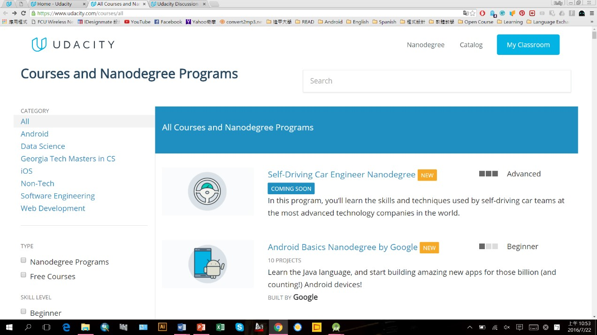
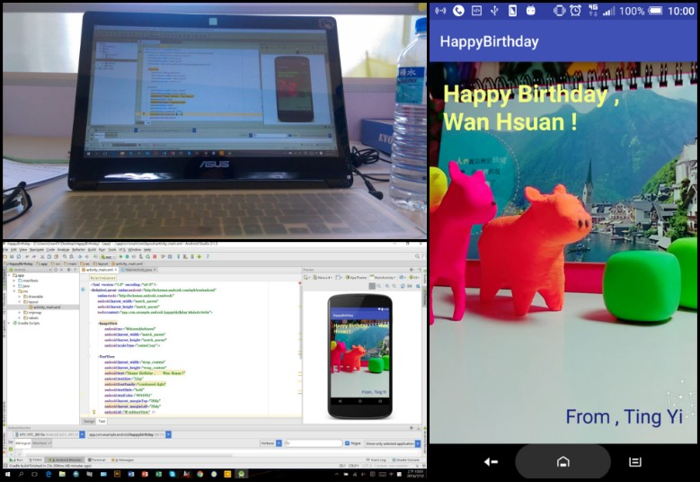

我被分配到的工作內容不多，很快就能完成，剩下的時間可以自己利用。暑假開始我在Udacity網站上學Android App的課程，原本只是一時興起為了好玩而學的，沒想到越學越起勁，剛好也可以利用工作完的時間繼續學。不過話說回來，有時候也會很擔心我花了很多時間與精力在學一個以後不一定會用到的技能，若是以後工作用不到會不會就等於是浪費了時間。

花了幾個禮拜，今天終於寫出我人生第一個手機APP介面，是一個生日卡片，雖然看起來很簡單只是一個圖片跟文字組成的介面，但這是花了無數的時間跟精力，中間遇到不少瓶頸好不容易才解決，顯示在手機的那一刻真的超興奮超有成就感!

一直以來都認為自己數理弱、邏輯差，從沒想過要學程式，常常會因為對自己的能力沒自信而不敢嘗試，也放棄了很多學習的機會，因此這次我想趁著畢業前最後一個暑假嘗試新的東西。其實一開始會選擇都計組也是因為看到空資組比較偏向資訊類的，覺得自己可能不適合，結果到大三時才發現自己對空資組的課程比較感興趣，所以才會趕緊修了幾門空資的課亡羊補牢。